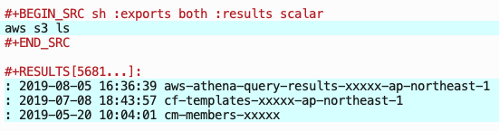

Run AWS CLI in an Org buffer
Table of Contents
はじめに
- org-babel で AWS CLIを実行してみました。手順を記載します。
実行環境
- OS
- macOS Mojave, version 10.14.5
- Emacs
- version 26.2
- Org-mode
- version 9.1.9
要約
- AWS CLIをインストールします
- exec-path-from-shell を使って シェルのPATHを Emacsに引き継ぎます
Emacs の
init.elに下記追加します;;;; exec-path-from-shell (when (memq window-system '(mac ns x)) (exec-path-from-shell-initialize)) ;;;; org-babel ;; コード実行時に confirm しない (setq org-confirm-babel-evaluate nil) ;; 実行できる言語を指定 (org-babel-do-load-languages 'org-babel-load-languages '( (shell . t) ) )
- AWS CLIが実行できます 
前準備
AWS CLI
AWS CLIを こちら からインストールします。
Emacs: AWS CLI パス設定
aws コマンドを認識させるために Emacsの PATH設定を行います。
exec-path-from-shell を使って シェルのPATHを Emacsに引き継ぎます。
Installation どおりに exec-path-from-shell インストールを行います。
Installable packages are available via MELPA: do
M-x package-install RET exec-path-from-shell RET.
インストール後、 init.el に下記設定を記載します。
(when (memq window-system '(mac ns x))
(exec-path-from-shell-initialize))
Emacs: org-babel 設定
以下のように init.el に設定します。
;; コード実行時に confirm しない (setq org-confirm-babel-evaluate nil) ;; 実行できる言語を指定 (org-babel-do-load-languages 'org-babel-load-languages '( (shell . t) ) )
AWS CLI実行
▼bashコマンドを実行してみます
コードブロック内( #+BEGIN_SRC ... #+END_SRC )で C-c C-c ( org-babel-execute-src-block ) を実行します。
コードブロック内に記載したコードが評価され、結果が #+RESULTS 直下に表示されます。
#+BEGIN_SRC sh ls #+END_SRC #+RESULTS[789f649c27406e24e1fb6689fcf186a331f138b6]: : img : index.html : init.el : run-awscli.org
▼ aws コマンドのパスが通っているか確認します
#+BEGIN_SRC sh aws --version #+END_SRC #+RESULTS[94050750f89caff84a83600af87f81985908ce7e]: : aws-cli/1.16.173 Python/3.7.3 Darwin/18.7.0 botocore/1.12.163
▼ aws コマンドを実行してみます
aws s3 ls でバケット一覧を表示してみます。
#+BEGIN_SRC sh :exports both aws s3 ls #+END_SRC #+RESULTS[5681767c5c45395a7ae378fac0a022d23ad41199]: : 2019-08-05 16:36:39 aws-athena-query-results-xxxxx-ap-northeast-1 : 2019-07-08 18:43:57 cf-templates-xxxxx-ap-northeast-1 : 2019-05-20 10:04:01 cm-members-xxxxx
※MFA設定への対応
MFAを設定している場合は少々プロセスが煩雑になります。 以下、 MFA設定有り かつ スイッチロール有り のケースの対応です。
1. 設定ファイルの編集
~/.aws/config ファイルを以下のように記述します。
[profile mfa] output = json region = ap-northeast-1 credential_process = cat /Users/kawahara.masahiro/.aws/tmp_cred.json
最後の行は credential_process = cat (tmp_cred.jsonへの絶対パス) とします。
認証情報「tmp_cred.json」 を 2. 認証情報の取得 で生成します。
2. 認証情報の取得
aws sts assume-role で一時的な認証情報を取得します。
以下スクリプトを実行します。
#+BEGIN_SRC sh :var MFA=240030 MFA_ARN='arn:aws:iam::xxxxx:mfa/cm-kawahara.masahiro' ROLE_ARN='arn:aws:iam::yyyyy:role/cm-kawahara.masahiro' aws --output json \ sts assume-role \ --role-arn "$ROLE_ARN" \ --role-session-name ar-cred-proc \ --serial-number "$MFA_ARN" \ --token-code $MFA \ | jq ".Credentials + {Version: 1}" > ~/.aws/tmp_cred.json #+END_SRC
今回は org buffer 上で shellを実行します。
上記の :var MFA=xxxxxx 部分に MFAの認証コードを記入して実行(C-c C-c )します。
(確認) tmp_cred.json を表示します。
cat ~/.aws/tmp_cred.json
{
"AccessKeyId": "ASIXXXXXXXXXXXX",
"SecretAccessKey": "L3iXXXXXXXXXXXXXXXXXXXXXXXXXXXX",
"SessionToken": "FQoXXXXXXXXXXXXXXXXXXXXXXXXXXXXXXXX,
"Expiration": "2019-08-16T09:27:22Z",
"Version": 1
}
3. aws コマンド実行
以降、 "Expiration" に記載されている時刻まで AWSコマンドを実行できます。
#+BEGIN_SRC sh :exports none aws --profile mfa s3 ls #+END_SRC #+RESULTS[7743dee24d959553496de2c16c5341b64714847f]: : 2019-08-05 16:36:39 aws-athena-query-results-xxxxx-ap-northeast-1 : 2019-07-08 18:43:57 cf-templates-xxxxx-ap-northeast-1 : 2019-05-20 10:04:01 cm-members-xxxxx
さいごに
今回使用したOrgファイル他を下記に置いています。
▼Orgファイルの HTML export https://masahirokawahara.github.io/org-mode/run-awscli/